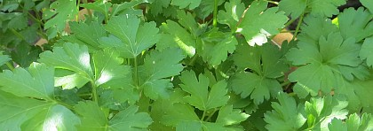

Tchès qui fut èstounné Mèscrédi pâssé? Ch'fut nous quand j'trouvimes djix-sept lettres dans la bingue qu'j'avons mins driethe la porte, en attendant la bouëte a lettre que l'Bos nos a promins. "Tchi brachie d'lettres," s'fit Lonore en sautant de jouée "et quazi toutes pour mé! Tchès qu'cheun chin veur dithe?"
"N'y'a pon tant a s'èstounné," s'fit Piteur: "d'pis not proumnade au Show d'vollale, nou n'pâsle que d'té en ville! Ch'est "How's Lonore? How's your daughter? How's fattie? How's Miss Pain?" qu'nou m'dit partout dans les rues. Les gens pâslent pus des Pains, pour achteu, que d'la prochaine election d'Counnétabye à St. Cliement."
Hor des djix-sept lettres, y'en avait yeunne pour nos d'mandé d'souscrithe ès pauvres honteurs des Blianc Sablions, à la Côte, eunne autre pour dithe a Piteur d'avé a payi s'n'arrérage de rât à St. Jean, et eunne autre du Coumité d'l'Hôpita pour le r'mercié d'avé offert d'etre Directeu, mais qu'tchiq'un lus avait dit qui l'vait l'coude! Toutes les autres lettres 'taient pour ma fille.
Des Valentines! Toutes des Valentines! Et toutes de belles valentines, ov de bieaux portraits d'sus, d'flieurs, d'ouèsieaux, d'brébis, d'cats et d'bieaux verset en angliais ov des fleuriches et des p'tits mousses ov des arbalètes a tithé sus des filles. Et l'créthaites-ous? Aussi vrai coumme j'vos l'dit! toutes pour d'mandé a Lonore d'les mathié! Et chose drole! toutes d'mandaient a ma fille si lis pliéthait de s'trouvé, a telle heuthe, a diffethentes plieches: et qu'lé sien qu'avait èscrit la valentine s'sait la: ou le r'counnaitrait a ses braies r'troussées et un touffét d'persi a sa boutonniethe.

"Y'en a p't'etre qui pourraient nos faithe dans l'tas," s'fit sen péthe: "ch'est a vaie! Ch'est assez drole qui s'adounne que tous s'sont a difféthantes câres de la Ville ov lus persi, la mème séthée! Lonore éthait fort a faithe a ètre dans la Parade, auprès du Ouèbridge, a Quatrebras, auprès d'eunne marchande de Châtennes, souos les bouës d'Plaisance, et a ben d'autres bords dans eune mème sethée..... et a la mème heuthe! quand ben mème ou couorrait tout l'temps. Ne v'chîn m'n'idée! Lonore îtha s'proumné en passant a l'entou de très ou quatre des plieches pas trop lien d'ichin: mé, j'ithai buzardé souos les bouës d'Plaisance et par là: té Laïzé - en r'venant de t'n'assembliée d'Couotuthe - tu r'merqu'ethas touos les brin d'persi dans l's alentours du Ouaisbridge! Et quand je s'sons rentrés ichin, d'viers djix heuthes-et-d'mie ou onze heuthes, j'nos ent'dithons ch'qué j'avons veu!"
"Right you are! pepée," s'fit Lonore: "et prend ben avis a ch'qué tu verras: faut tachi d'adounné sus un bon quand nous a l'chouêx!"
Y faut créthe que chu signa la d'persi est un signa parmi les gens d'la société, car, chose r'merquabye, touos les valentines a ma fille s'en servent. (J'ai oui qu'y'a des livres sus l'Langage des Flieurs; faudra qu'j'en accate y'un pour vaie tches qu'persi veur dithe) J'cru quazi, pour eunne minute ou deux qu'y'avait tchiq trique la d'sous; mais nouffet! l'escrituthe sus l's enveloppes n's'entr'sembliait pon en tou. Ch'tait tous d'difféthents messieux qu'avaient envié chacun lus Valentine a not' fille unique - et n'roublie pas d'met' seulle héthiethe, s'fit Lonore - et j'en fut toute ravie! Té qui grounnais au prix d'san fro d'san chapé a plieummes, qué j'fit au bouonhoumme, vé tu achteu dans par ou és qu'j'en sommes? Né v'la pour bin dithe toute la Ville en ésmution et j'n'avons qu'a puchi dans l'tas!
Nou vos r'ditha pus tard tchès qu'en fut. Pour dé mé, j'sai bin que j'plieuthethai hardi quand vindra les neuches. Chose seuthe que man bieau fils plieuththa étou..... d'jouée!
(Madame) Laïzé Pain,
At Home: Everyday - for now.
Morning News 22/2/1912
Viyiz étout: